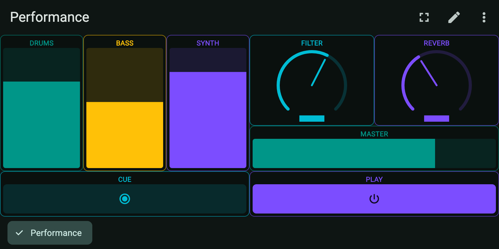
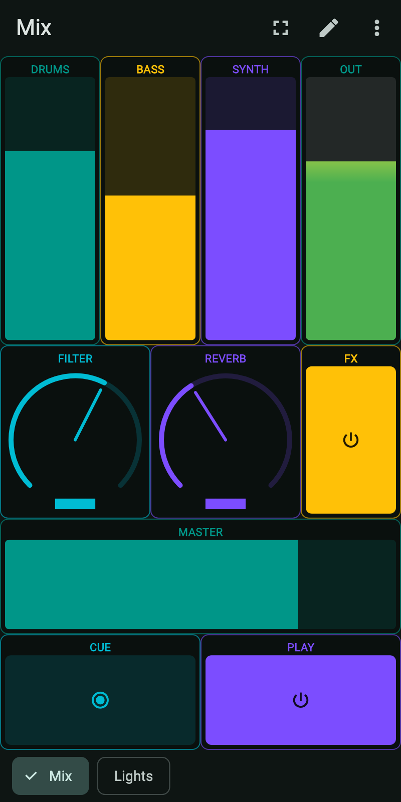
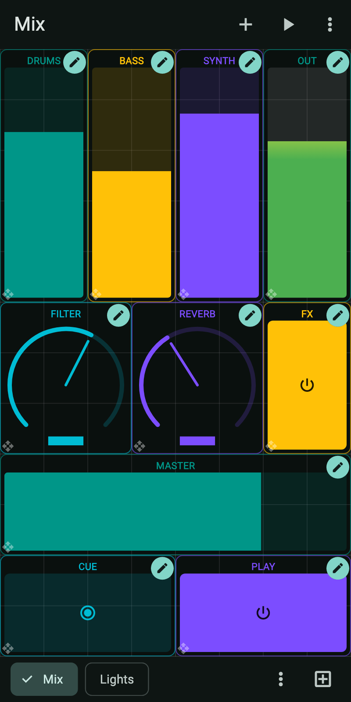
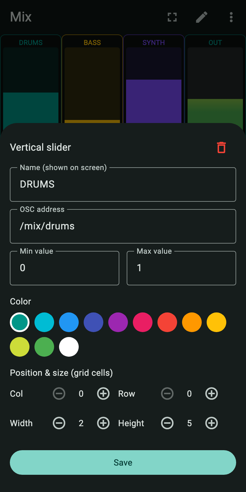
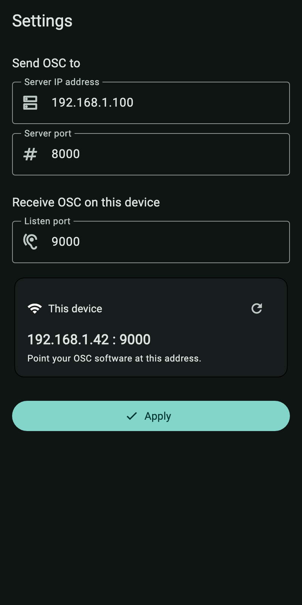

Build your layout
Place sliders, knobs, buttons, meters, labels, and shapes on a grid. Set the address, range, color, and size for each control.
AN OPEN-SOURCE ANDROID APP
OSC Magician lets you build control surfaces for the software and hardware you already use. Arrange your controls, connect over OSC, and play.

WHAT IT DOES
Place sliders, knobs, buttons, meters, labels, and shapes on a grid. Set the address, range, color, and size for each control.
Control OSC-compatible mixers, DAWs, lighting software, and more over UDP. Incoming messages update matching controls.
Use multiple pages in portrait or landscape, go fullscreen for play, and import or export your pages and settings as JSON.
SCREENSHOTS
These example surfaces are rendered by the app. Your layout can look different.




GETTING STARTED